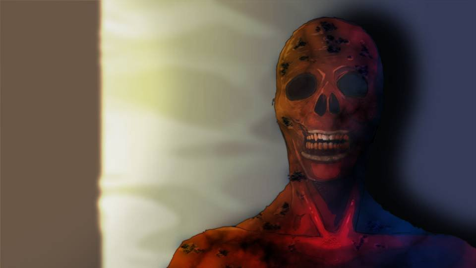
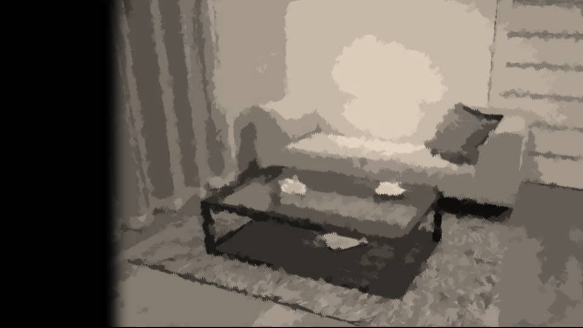
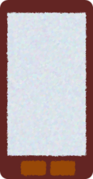

Reunion
Today the police station looked very different.
It was crows. Dozens of crows were surrounding this police station.
Could the smell of death be coming from here, or something?
It was crows. Dozens of crows were surrounding this police station.
Could the smell of death be coming from here, or something?


At the police station, Mom was waiting.
I was scolded for not answering the phone.
I was scolded while being held tight. I was scolded by Mom, who was crying.
I was scolded for not answering the phone.
I was scolded while being held tight. I was scolded by Mom, who was crying.
But why was that?
The feeling that I was being scolded didn't sink in.
Even though I knew the reason I was being scolded, the reason Mom was crying, and also the reason I was being held.
My own heart seemed to be floating somewhere up in the air.
The feeling that I was being scolded didn't sink in.
Even though I knew the reason I was being scolded, the reason Mom was crying, and also the reason I was being held.
My own heart seemed to be floating somewhere up in the air.
Had Dad really died?
Yesterday morning, we had exchanged greetings as usual and headed off to school, to work.
And yet the next time we meet, even if I'm told he's a flayed body―
Yesterday morning, we had exchanged greetings as usual and headed off to school, to work.
And yet the next time we meet, even if I'm told he's a flayed body―

Haruka, frightened and trembling, kept apologizing to me and Mom.
But, Mom said nothing. Neither blaming her, nor comforting her.
Perhaps it was just my imagination, but Mom's eyes even seemed to look at Haruka with pity.
But, Mom said nothing. Neither blaming her, nor comforting her.
Perhaps it was just my imagination, but Mom's eyes even seemed to look at Haruka with pity.

"You're Haruka Niimura-san, right? Could you go up to the second floor?"
And Haruka, accompanied by a different officer, headed for the stairs without saying a word.
Was it "questioning as a murder suspect"?
Was it "questioning as a murder suspect"?
"Haruka...!"
When I called her name, Haruka stopped for an instant.
But, without even turning toward me, she started up the stairs right away.
But I know.
Haruka didn't kill Dad.
It must be some kind of mistake...
When I called her name, Haruka stopped for an instant.
But, without even turning toward me, she started up the stairs right away.
But I know.
Haruka didn't kill Dad.
It must be some kind of mistake...
"And, Natsumi Kogori-san, I'd like you to come down to the basement."
"Understood."
A reply so dry and calm it surprised even me.
Whether it's a hospital or the police, a basement doesn't give a very good impression.
"Understood."
A reply so dry and calm it surprised even me.
Whether it's a hospital or the police, a basement doesn't give a very good impression.

"Kogori-senpai...!"
Goto seemed to have just arrived now, too.
Goto seemed to have just arrived now, too.
"They said to come down to the basement for a bit. I'll be back."
"The basement...!"
"The basement...!"
Where the detective called Ise-san stopped was in front of the room with this nameplate.
"Ummm... that is... For the identification... the remains, you see..."
Ise-san, perhaps finding it hard to say, explained in a low mumble that was hard to catch.
In other words, he was telling me to confirm Dad's body.
Ise-san, perhaps finding it hard to say, explained in a low mumble that was hard to catch.
In other words, he was telling me to confirm Dad's body.
A flayed body, even if it's Dad, is not something I want to see.
Rather, because it's Dad, I don't want to see it.
But the reason I came here was to make Haruka's innocence clear.
If, by identifying the body, there might be a clue that could prove it.
From the moment I decided to head here with Haruka, I had been prepared.
Rather, because it's Dad, I don't want to see it.
But the reason I came here was to make Haruka's innocence clear.
If, by identifying the body, there might be a clue that could prove it.
From the moment I decided to head here with Haruka, I had been prepared.
"You mean you'll let me see Dad, right?"

"Well, that's so, but... um...
do you know the state the body is in...?"
"The skin stripped from the whole body, a corpse too wretched to look at, is what I've heard."
"Well... yeah... But, though it's strange for me to say it, I'd rather not recommend it... Your mom already looked at it for us, anyway..."
"I'm allowed to see him, aren't I?"
"The skin stripped from the whole body, a corpse too wretched to look at, is what I've heard."
"Well... yeah... But, though it's strange for me to say it, I'd rather not recommend it... Your mom already looked at it for us, anyway..."
"I'm allowed to see him, aren't I?"
"Then, this way..."
A small, dim room.
Funeral flowers and a blank memorial tablet had been set out, and the smell of incense hung thick in the air.
Were the crows out front sniffing out the smell of death that this incense should have covered up?
Funeral flowers and a blank memorial tablet had been set out, and the smell of incense hung thick in the air.
Were the crows out front sniffing out the smell of death that this incense should have covered up?
I couldn't make out any smell of death like that.
Only the smell of incense, and of somehow inorganic concrete―though in truth it was organic―was all I could make out.
And―
Only the smell of incense, and of somehow inorganic concrete―though in truth it was organic―was all I could make out.
And―
In the center of the room, a platform like a bed without a mattress.
On top of it, a 'something' with a white cloth draped over it.
That something―a little of something reddish-black was sticking out.
Under this is Dad...
On top of it, a 'something' with a white cloth draped over it.
That something―a little of something reddish-black was sticking out.
Under this is Dad...
"You only need to check just a little. If you can tell whether it's your dad or not, tell me so.
If you can't tell... it can't be helped..."
"Okay..."
"Then... I'm taking the cloth off."
"Okay..."
"Then... I'm taking the cloth off."
Ise-san put his hand on the edge of the cloth.
"Please wait..."
"Hm? Going to stop after all? That's fine by me, even so..."
"No... please let me be the one to take off the cloth..."
I moved my stalled feet toward the platform.
"Please wait..."
"Hm? Going to stop after all? That's fine by me, even so..."
"No... please let me be the one to take off the cloth..."
I moved my stalled feet toward the platform.
"All right..."
Ise-san took one step back.
I took hold of the cloth, and then slowly lifted it up.
Ise-san took one step back.
I took hold of the cloth, and then slowly lifted it up.
The one sleeping there was, unmistakably, my dad.
Other people might not be able to tell, but, still, it's without a doubt my dad.
Even changed beyond recognition like this, I would never mistake him.
Other people might not be able to tell, but, still, it's without a doubt my dad.
Even changed beyond recognition like this, I would never mistake him.
"I thought it would be worse, but...
I can clearly tell, it's Dad."
"I-I see..."
In the eyes of an ordinary person, it must be an extremely gruesome body.
But, feelings like fear or disgust didn't well up in me.
"I-I see..."
In the eyes of an ordinary person, it must be an extremely gruesome body.
But, feelings like fear or disgust didn't well up in me.
"Why... even though the skin was stripped off...
are the eyes gone too?"
"That's, well... the direct cause of death was that he bled to death from crows pecking at him...
The crows, you see..."
If this were someone else, I would probably have feelings like these.
'What a horrible lump of flesh. So people, when you skin them and crows peck at them a little, can turn into something this grotesque and ugly, and hideous. Truly disgusting, unpleasant, I don't even want to look.'
If this were someone else, I would probably have feelings like these.
'What a horrible lump of flesh. So people, when you skin them and crows peck at them a little, can turn into something this grotesque and ugly, and hideous. Truly disgusting, unpleasant, I don't even want to look.'
But, what if it were someone close to me, someone I loved dearly?
I gazed at Dad's face once more.
I gazed at Dad's face once more.

Once I knew it was Dad and looked at his face, not the slightest bit of the unpleasant feelings from before welled up.
Simply... simply, simply, simply, simply empty.
It was a feeling of emptiness.
There was no fear or revulsion―not even that, only a hollow, vacant feeling.
Simply... simply, simply, simply, simply empty.
It was a feeling of emptiness.
There was no fear or revulsion―not even that, only a hollow, vacant feeling.
"Excuse me, could you leave the two of us alone?"
"............ I'll go see Haruka Niimura-san."
"............ I'll go see Haruka Niimura-san."
With those parting words, Ise-san left the room.
Beside Dad, a single folding chair had been placed.
I sat down on the chair, and looked at Dad's face once more.
Beside Dad, a single folding chair had been placed.
I sat down on the chair, and looked at Dad's face once more.
"Sorry, Dad, I'm late..."
My dad is really cool and dapper... and yet, a little playful.
Haruka often called me a daddy's girl, but, after all, I really do love Dad.
My dad is really cool and dapper... and yet, a little playful.
Haruka often called me a daddy's girl, but, after all, I really do love Dad.

"Natsumi, congratulations on moving up a year."
Last Sunday, I had been given a new smartphone as a present.
Last Sunday, I had been given a new smartphone as a present.
"Wow, thank you, Dad! Did Dad design this model too!?"
"Of course! And also... I got ones ready for Haruka-chan and Goto-chan too. Got them cheap, since people know my face!"
"Matching phones for the three of us! Thank you, Dad!"
"Of course! And also... I got ones ready for Haruka-chan and Goto-chan too. Got them cheap, since people know my face!"
"Matching phones for the three of us! Thank you, Dad!"
"Nah, it's no big deal. So the three of you can always stay good friends. Like Akane and Mifuyu-san."
"Yeah! I'll take good care of it! Hey, hey, the first picture on this phone, I want it to be of Dad!"
"Yeah! I'll take good care of it! Hey, hey, the first picture on this phone, I want it to be of Dad!"

"Haha! You sure you want me? Wouldn't Haruka-chan or Goto-chan be better?"

"It's fine, it's fine! Okay! Smile, smile!
Hey! Don't make a funny face, make a cool face!"
"Dad, honestly... at least in the last picture, look properly cool...
With you like this, now...
I can't take it over again, can I..."
"Ngh... Dad...
I don't want this...
I don't want this!!!"
From deep behind my eyes, a hot, boiling liquid came welling up.
As if to spout its steam, ugly sobs leaked from my mouth.
Even when I covered my eyes, even when I covered my mouth, it wouldn't stop.
From deep behind my eyes, a hot, boiling liquid came welling up.
As if to spout its steam, ugly sobs leaked from my mouth.
Even when I covered my eyes, even when I covered my mouth, it wouldn't stop.
That they had welled up so suddenly wasn't because Dad's condition was terrible.
It was because I felt, for the first time, that Dad had died.
That Dad of mine won't ever come home again...
The Dad who made a funny face and a funny pose on the screen will show me nothing but this painful form anymore, and eventually he'll be cremated and turn to ash.
It was because I felt, for the first time, that Dad had died.
That Dad of mine won't ever come home again...
The Dad who made a funny face and a funny pose on the screen will show me nothing but this painful form anymore, and eventually he'll be cremated and turn to ash.
I tried laying my hand on Dad's cheek.
It was slightly dried out, just like jerky.
It was drier than a living person.
And it was cold...
It was slightly dried out, just like jerky.
It was drier than a living person.
And it was cold...
The black dents here and there, were they because crows had pecked at him?
On top of having his skin stripped off, to be eaten alive by crows and die, how much agony must he have gone through?
I can't even imagine it.
On top of having his skin stripped off, to be eaten alive by crows and die, how much agony must he have gone through?
I can't even imagine it.
Dad... surely, by now, it doesn't hurt anymore, right?
Dad, how did it come to this?
It wasn't Haruka, right?
Tell me. Why...
Dad, how did it come to this?
It wasn't Haruka, right?
Tell me. Why...
The dream I had at Haruka's house, it might have been Dad's dream.
His face was very different from the one in the dream, but Dad was trying to tell me something.
Dad, he must have breathed his last amid suffering beyond imagining.
But... even so, trying to tell me something.
His face was very different from the one in the dream, but Dad was trying to tell me something.
Dad, he must have breathed his last amid suffering beyond imagining.
But... even so, trying to tell me something.
"Hey, Dad... Why did this happen to you? Who did this?
This danger closing in on me, what is it?"
I spoke to him like that, but Dad stayed silent.
Please, Dad... Let me hear you just once more...
What on earth... happened?
I spoke to him like that, but Dad stayed silent.
Please, Dad... Let me hear you just once more...
What on earth... happened?
―How long had I been with Dad?
"Kogori-san?"
"Kogori-san?"
When I came to, Ise-san was shaking me by the shoulder.
"Are you all right?"
"Yes... all right..."
Had I been asleep, still sitting in the chair, in front of Dad?
"It's about time, is that okay?"
When Ise-san said that, I stood up reflexively.
"Are you all right?"
"Yes... all right..."
Had I been asleep, still sitting in the chair, in front of Dad?
"It's about time, is that okay?"
When Ise-san said that, I stood up reflexively.
"Kogori-san, I only needed you to confirm the identity... so you're free to go home now.
Niimura-san and the others are waiting over there. I'd like you to hurry and go let them see your face."
Had Haruka come back to her senses?
Had Haruka come back to her senses?
I covered Dad with the white cloth.
Dad... what on earth did he do?
Dad... what on earth did he do?

On the chairs outside the morgue, there were Haruka and Goto.
Haruka kept her head down, and Goto was rubbing Haruka's back.
Haruka kept her head down, and Goto was rubbing Haruka's back.
"Senpai..."
"Sorry, Goto, for causing you all kinds of trouble."
I made the best smile I could.
"Sorry, Goto, for causing you all kinds of trouble."
I made the best smile I could.
"Senpai, you idiot!
Acting tough at a time like this!
It's okay, isn't it... at a time like this, at least... not to act tough..."

Haruka, her head still down, was clenching her fists tight.
If she's here, it means they did question her, but, as I thought, she must have been far from their picture of the culprit.
If she's here, it means they did question her, but, as I thought, she must have been far from their picture of the culprit.

Haruka, raising her face, fixed Ise-san with a glare.
Seeing Haruka's face like that, he looked a little troubled, but soon walked off somewhere.
"Haruka..."
"Just as I thought, the police wouldn't accept me as the culprit. All they said was 'Ridiculous,' and they threw me out of the interrogation room..."
"Well, obviously. Haruka, you're not some culprit―"
"Just as I thought, the police wouldn't accept me as the culprit. All they said was 'Ridiculous,' and they threw me out of the interrogation room..."
"Well, obviously. Haruka, you're not some culprit―"
"Wrong!"
Suddenly Haruka started shouting, and Goto and I jumped with a start.
Suddenly Haruka started shouting, and Goto and I jumped with a start.
"Hey, Haruka, this is a police station."
"Those guys don't understand anything...! It was like this before, too..."
"Before?"
"Those guys don't understand anything...! It was like this before, too..."
"Before?"
"Hey, mind if we go somewhere else? I'll tell you everything, so..."

With that, Haruka stood up.
"Yeah, that's fine, but..."
I was worried about Mom, who was still being questioned.
"Yeah, that's fine, but..."
I was worried about Mom, who was still being questioned.
"Senpai's mother, they say, will need a little more time..."
"I see... Got it. Haruka, where's good?"
"If we can, somewhere there are people watching..."
Somewhere there are people watching? Isn't it better to have this kind of talk where nobody's watching?
"I see... Got it. Haruka, where's good?"
"If we can, somewhere there are people watching..."
Somewhere there are people watching? Isn't it better to have this kind of talk where nobody's watching?
"Then, would Zahha be okay?"
"Yeah..."
"Yeah..."
I stood up too, and after letting the staff at the front desk know, I left the police station.
When I looked at the clock, it was already 18:00.
When I looked at the clock, it was already 18:00.
Read ✓ Next in this arc →